— Woe, make me your student
Devine Lu Linvega's journal
2024
18S
2024-09-09 Fractranfooding
We are again in familiar waters, with their familiar weather radio voices,
tugboats, madronas, lean little swallows, cormorants, banana slugs and
extremely bitter IPAs. We wake up and it's still dark out, summer must be
slipping away; the sun looks all burnt up, red and angry against the morning
haze. The music aboard is changing to an appropriate shoegaze, as if to match
the rustling of leaves and wailing of the wind passing through the shrouds.
Six or seven months has been enough to fall so far behind software updates, to
miss just enough versions, that even the part of the program that looks for
updates doesn't recognize the new server endpoints. As expected, most updated
things got worse, a few of them became quite awful, as it typically goes with software. A friend
uses necrotic as opposed to bitrot, because bitrot implies things have
been left to decay but software necrosis is rotting while being alive and
maintained.

18R
2024-08-24 Fractalfooding
I always fall within visible range of a technical solution needed to solve
some generic software issue tormenting me but ever so far as to not be capable
of navigating the tool-chain involved in applying said change to its source,
and so it goes, each time this occurs a new software is born to replace it.
Years melt away, no tool-chain moat is ever bridged, programs of every shape
and form have been transcended, the dogfood thoroughly consumed. "Blessed!",
for the transformation of the damned into doghood is complete.

18Q
2024-08-13 Back to Hathayim
We finally emerged from the fog bank that haunts the north of the island, and
sailed into the remains of a familiar Desolation Sound summer. The sound of
dinghies being pulled up the beach, dry mosses crackling under your feet. Do
our legs remember how to walk, where are the fair weather clothes, put away the
firewood, the sun is setting, catching up with friends, our time apart has it
been years, no, we have just seen you haven't we. How was it up there? Was it
fun.
How near to good is what is wild.
It's time to manifest all these thoughts scribbled in transit. I need to
finish up the slides for the upcoming talk, and the
music for the upcoming show, and, and time is ebbing!
- Found a neat optimization of the Uxn core.
- Made a few contributions to Kodiak.
- Added macros support to Drifblim.
- Wrote a Fractran runtime and updated notes.

18P
2024-07-19 Roudo Ses
The automated weather radio voice drones about the advent of favorable
northerly winds that never manifest, so we've resorted to doing short hops,
weather permitting, between the safety of one inlet and the next whenever the
storm catches its breath, often against tide, oftener against wind. We occupy
the disquieting lulls of what feels more like trench warfare than passaging
drowned in tea, blankets and the smell of paperbacks.
I've also kept busy revising some of the Solresol
poetry in Wiktopher. In R. W. Kimmerer's Grammar
of Animacy, she says that 70% of words in Potawatomi are verbs, as opposed to
English in which only 30% are. Through the lens of an animist language, the
hill is less there, than there is occupied at being a hill. She
puts it succinctly in "A bay is a noun only if water is dead".

18O
2024-07-19 A Halo Around The Sun
The inlets we find ourselves anchored in are worlds of their own with
inhabitants that, as transitory as some may be, are affairing themselves with
happenings that extend to the shores of the lagoon, but no further. A
strange new thing has come into the sheltered water and disrupted its hubbub,
now everyone looks as if caught in a gasp, at its skyward pointing wing, at its
opaque lifelessness. Through the oblong eyes of the vessel, like under a
diving bell, we peer back in wonder.
There are as many days to our bow without connectivity than those that lay
between our stern and Prince Rupert, where we were last able to make contact.
In these secluded days, I am reminded of a passage from one of Thoreau's
journals that reads the inscription on a Swedish inn:
You will find at Trolhate excellent bread, meat, and wine, provided you bring
them with you!
- Progressed toward a Markl prototype.
- Improved Uxnfor to better handle OOP formatting.
- Wrote for Malleable Systems Collective's Fearless Extensibility.
- Took care of many small tasks for the wiki that I
had been putting off, such as improving categorizing and removing redundant
pages.

18N
2024-07-12 Southward
We twice waved farewell to Sitka. A few hours after untying the lines, the
engine that normally cycles water through itself to cool down decided that it
would not do that anymore. The problem appeared to have gone away after some
tinkering, only to return further down the coast, precipitating an emergency
arrival in some questionably-sheltered flies-infested inlet hidden past but a
few jagged rocks that the ocean breakers have as of yet unsuccessfully softened.
We dropped the anchor, slept, slept some more, once our strength returned, we
had to seriously take things apart and figure shit
out.
A single persimmon
left in the sky;
picked for me.
For as long as Uxn has been around, I've meant to resume and complete a puzzle
game that Rek and I wanted to build after Oquonie,
called Markl. During these recent night passages I've
spent my watches playing the game out in my head, and arrived to an exciting
place with the design. I've started implemented it the moment we reached
port.
- Wrote a track for a Diablo tribute cassette.
- Added binary data pasting to Left.
- Enjoyed the haikus from Santoka's teacher Seisensui Ogiwara.

18M
2024-06-25 A sensibility for the useless
We have sailed as far north as we are willing to go this year. As the summer
weather settles, heading further would mean crossing longer distances with
decreasing chances of favorable winds, less sailing and more motoring, which
does not appeal to us one bit. We'll head to Sitka before making our way back down to warmer waters and enjoy what remains of the summer free
of foul-weather jackets.
Spend enough time in the esoteric programming circuit and you'll come across
the usual suspects: self-generating programs, polyglot programs and quines; but
until this week I had never heard of ambigram/palindrome programs, which that
can be evaluated from either directions. Naturally, I had to have a go at it,
and I've added it to my growing collection of
labyrinthine programs.

18L
2024-06-14 Endless summer days
Alaskan summer days are long, the sun wakes us up at 4am, and it stays bright
until 11pm. By 5am, the batteries are already topped up from solar, if we were
very motivated, we could solar-cook every meals each day.
I occupy the few moments we have between sails by knocking down tasks I had in
my notes for a while, like making a disassembler and cleaning up the web emulator enough
that I can use it to show programs on wiki pages, like bifurcan and wireworld.

18K
2024-05-30 At the Alaskan border
Sitting aboard Pino in the last port in Canada before entering Alaska, thinking about
how odd it is to be sailing straight from the south and having to change
timezone. We've been moving every day of the past two weeks, making use of the
favorable wind to jump from anchorage to anchorage. During these long passages,
I try to write the talk for Handmade in my head.
Abner, who organizes the conference, asked me specifically to explore other ways to live with the attending creatives and
developers affected by burnout or the mass layoffs. I've had Edna St. Vincent
Millay's poem in mind these past few weeks, it goes:
Safe upon the solid rock the ugly houses stand:
Come and see my shining palace built upon the sand!

18I
2024-04-27 String rewrite III
We've stowed away our 120v devices, untied the lines and begun our sail north
to Alaska! During the next few days, we will sail
through the inside passage and out the northern tip of Vancouver Island. As we hop between anchorages, I wonder if a
graphical environment running on a naive string rewriting computer possible, or even
usable?

18H
2024-04-13 String rewrite II
Rek and I are completing the remaining projects on our pre-departure list and
provisioning for our sail to Alaska. Over the winter,
we've strengthened critical parts aboard Pino, replaced
experienced pieces of the rigging and simplified the habitat's life-systems
— Hopefully, this will all make the journey safer, and dryer.
After exploring Wryl's Modal language further, I
decided to write an
implementation to better understand how it worked, mechanically. This
sparked a renewed interest from the original creator, attracted members of
catlang community to explore string rewriting and has given me long and
delightful evenings pondering about how to crack various programming problems
with it.

18G
2024-04-02 String rewrite I
We are waiting for a few parts that we had machined, to return to us from the local fabricator. While we wait, I spend most of time playing with esolangs, one that has especially interested me lately is Modal, which is a simple string-rewriting scheme similar to Thue, but with the added feature that it allows for variables, and recognizes scope delimiters. It's a brutally simple idea that allows a program to be shaped as to mimic nearly any programing paradigm.
I had been reticent to expanding the Uxntal macro system because of how it creates disjointed fragments of code that couldn't be properly optimized, but after talking to people writing programs in which macros were definitely the right tool for the task, I've decided to rewrite the implementation and make them more robust.

18F
2024-03-21 Catlangs
As days are getting warmer, we can begin to tackle some much needed
maintenance topside like changing old lines, varnishing the oars and
inspecting the rigging. After a whole winter of getting up in the dark to do
weight training, I feel it was well worth it as my back pain is
gone, I sleep better and feel more overall physically capable. I have a month
left of gym membership and plan to make use of it as much as I physically can
before its expiration, and our casting off.
I've spend the idle hours of these past few days improving Left, thinking about concatenative programming and trying to better
understand what makes a language concatenative. To try and answer this
question, I've asked members of the catlang community to add example programs
for the various flavors. One of these examples was the Tak
Function which was new to me, and found it to map surprisingly well to
stack programming.
- It's just been too nice outside for any more computer musings.
- Enjoyed Henrik Karlsson's Third Chair story.

18E
2024-03-10 Left revamp
We took Pino's chainplates off and while the new ones
are being fabricated, we reinforced the area where the chainplate meet the
deck. It makes for a momentarily uninhabitable place to live, so I haven't had
much headspace to do creative work these past few days, but it will be well
worth it considering the places we're hoping to venture into.
Whenever I get to reclaim my desk from the pile of tools and materials that
took residency on there, I fool around with UTF-8
encoding support in Left. Looking into how diacritics
can be appended to other glyphs, I've begun to consider if I couldn't possibly
encode the Uxntal Alphabet entirely from
pre-existing glyphs within the two-bytes range and use diacritics for
modes.
- Made a few improvements to Left's support for UTF-8.
- Rewrote the uxn.js, it now passes the opcode tests.
- Added example programs to the concat wiki.

18D
2024-02-25 Hello, Dot?
Our plans for the summer are coming into focus. It looks like we'll depart
early, head as far north as we can make it, and see if the boat and its crew
can weather the cold. This ought to give us taste of what we might expect would
we decide to make it further into the arctic next year.
Someone found an interesting undefined behavior in the assembly of Uxn code,
where the nesting of child labels could be
implemented in one of two ways, leading to an incompatiblity between
assemblers. I've explored this further and found myself pulled me into a
concatenative object-oriented programming rabbit-hole.

18C
2024-02-11 Conlang Weekly
Other than doing improvements aboard, it has been a month of playing with conlangs and conscripts. I begun
exploring variable length glyphs in Left after adding support for the Lambda(λ) character
last month, and went further still by supporting the Shavian alphabet. I had been looking for an alternative
alphabet for a while and loved its 48 letters, the symmetries in the glyphs and
how easy it was to learn
it.

18B
2024-01-26 Back to music
I've originally started looking into virtual machines to build a target to
host some games, a handful of tools and my wiki — but instead of stopping
once I had done so, I kept pushing further and became obsessed with this
programming language design stuff, and along the way, I lost track of why I was
even doing it all in the first place. After a two year detour, I look back and
I've almost totally ignored my other interests as a digital artist and
musician. It's about time I find my way back.

18A
2024-01-13 Maintenance
The forge that we use at Hundred Rabbits has been taken down by DDoS attacks and
is struggling to come back online, the event reminded us that we ought to also
have mirrors and release versions of these source files available elsewhere. I've begun
to host copies across our various websites. The builds are still
accessible through itch.io.
Until we regain access and release the changes of the last few days, keeping
with the spirit of improving the resilience of the tools we use I've taken a
moment to write a kind of pocket version of the console emulator and self-hosted assembler as to see how many lines are
needed to start from the seed assembler and replicate it. A copy of the pocket
emulator, the source for the assembler and its hexadecimal representation have
been added to the wiki.
In the meantime, if anyone is looking for a specific file that is currently
unavailable, get in touch!
2023
It's funny how I can go from being utterly terrified at the onset of a
project such as the total rewiring of Pino, to looking
back thinking that it wasn't at all as hard as you expected, and having that
familiar realization that that twinge of fear is more often about
starting than it is about doing the task itself.
As a little gift to ourselves, Rek and I ported Oquonie to Varvara, which
somewhat ensures that this little world to remains playable now that the
previous builds have begun to have mixed success running on recent operating
systems.

Rek and I were invited to do a residency at LEÑA, and we sailed to our dream
destination, the breath-taking Princess
Louisa Inlet. I had, once again, the opportunity of crossing the US by
train, eastward this time, with a bunch of amazing people heading to the last
of the Strange Loop conferences. I got a tattoo of my favourite
demon, Stolas, by my friend and favourite tattoo artist Lizbeth.
After a short fling with parallel
computing, I realized that it was more trouble than it was worth for the
scale of projects that interested me. I've added lambdas to Uxntal, which was
certainly the single greatest UX improvement to the language since its
creation.
This crazy and wonder-full year ended with the publication of Rek's latest
novel Wiktopher, and as the year and projects come
to an end, we are now turning our gaze back to the horizon for the next year,
and our next projects.
For the year of 2023, Maurice Renard's Le Peril Bleu, was my favourite book. Coline Serreau's La Belle Verte was my favourite movie. Cimerion's Contresort was my favourite album.
17Z
2023-12-28 Lisp
I've been taking it easy for the last few days of the year, cooked a lot,
walked a lot. I've been re-reading SICP and idly poking at implementing a Lisp system in the style of Varvara. I don't have any specific goal for it beyond
exploring low-level symbolic computing, but who knows where these things might
lead.
After watching an excellent documentary about the Newton,
I found myself reading about the various ways to convert hand-written letters
into their digital representations, and soon found myself fascinated enough
that I just had to invent my own little shorthand calligraphy and interpreter.

17Y
2023-12-09 Pomparu
Rek's Wiktopher is out! After nearly seven
years, it's finally available for anyone to read. I'm super happy with the
result, it includes a few side projects documented on here, such as a dialect
of Solresol, and the game Hako. That's all I've this week, so go read it!
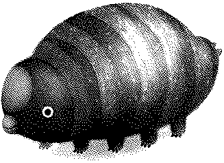
17X
2023-11-20 Ulz Compression & Elmet Brae
The Elmet Brae compilation has been released,
and put up on Beldam Records with a
beautiful cover by Rostiger, who also
made the Varvara Zine.
I've spared a few evenings to implement a Ulz
encoder, for which my first attempt was nearly a year ago, and at the time,
writing programs in Uxn that involved many nested loops terrified me. So, it
felt great to revisit this old problem that stumped me before, and solve
it.
Members of the Solresol community and I talked
about the lack of useful example sentences in the language, and how the handful
of examples out there often include mistakes, so we've put together a revised list of sentences that we could agree on.

17W
2023-11-11 Ternary Party
Rek and I are doing a final proof-reading of Wiktopher before release, we're trying to make sure
that all of the book's conlang dialogs are consistent with each other. On the
topic of conlangs, we've also translated Thousand
Rooms in Solresol.
In the evenings, I've been revisiting ternary
computers after wondering about string encoding in such a system. I've only
implemented the basic
scaffolding so far, but I'm hoping to reach a point where it can assemble
and run basic TerSCII printing routines.

17V
2023-10-25 Back Aboard
After being away since leaving for the train to Strange Loop, we finally made
our way back to Pino. It feels great to be back in our things, and to have the
mind-space to create again, I was able to write music this week, and it had
been a very long time since I last felt like doing so.
I also helped with the implementation of a few devices for the
Javascript version of Varvara that a friend of ours use in their classroom,
someone also contributed a WASM implementation of the Uxn core, which speeds things up
a lot in comparison with the old one I made last year. I've also played with
sixels.
17U
2023-10-12 Perma
These past few days, Rek and I were invited to participate in conversations
with students, researchers, and radio hosts about sustainable technological
practices(Right To Repair, Design for Disassembly, Open Source, etc). We're
witnessing a growing interest in software longevity, digital preservation, and
the organization of a critical mass of ecofeminist collectives exploring the
failability of modern tech, and the development of resilient practices, beyond mere
academics.
- Nothing to show yet, but working on Varvara's new Audio device with Bad Diode.
- The talk for Strange Loop is now available online!
- Enjoyed reading Pauwels' Blumroch L'Admirable once again.
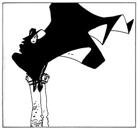
17T
2023-10-07 Stolas
After taking the train from Seattle to Saint-Louis, I kept on heading East to
visit family and friends. I've been feeling a bit of out of sorts in regards to
programming, and unmotivated to do any software development. It'll come back to
me, but in the meantime I'll be spending my days drawing
dailies for the month of October, and catching up with movies and music
that came out since we last had access to reliable internet connection.
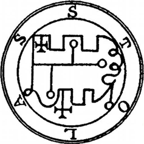
17S
2023-09-25 Strange Loop Or Die Tryin'
On the eve of the talk, I sit half-awake waiting for my first real meal since
leaving Victoria to arrive, it's been two hours, blatter is coming down hard on
this very loud, and very understaffed, and only available vegetarian place
within walking distance from the hotel. And, my voice is shut, the talk is in a
few hours.
I normally am a really careful planner when it comes to giving these sorts of
technical talks, you wouldn't catch me going out the night before.
I had assumed that the train from Seattle would either carry their one
vegetarian meal on the menu, or accommodate. After a first day of eating cold
bread loaves with margarine, and an altercation with an uncompromising
attendant on the second day, I managed to secure myself a "Steamed Russet
Potato A-la Tomato Sauce" for the third.
I had also assumed that the venue would carry palatable vegan options, or that
I could cook my own. After missing the Strange Loop meal service twice in a
row, due to talk scheduling conflicts, I managed to queue long enough to
acquire one of the last remaining scoops of an awful vegan soup. I promptly
returned to stealing whole fruits from the hotel gym and eating them in my
room, which I was content with. The problem that wasn't apparent at first was
that eating sweets all day kept me up all night.
Despite these mistakes in preparing properly for the road leading to the talk,
I managed to show up on stage on time, give an (hopefully) entertaining
presentation at Strange Loop 2023. I'd love to give a special thank to Jack
Rusher for the tea that brought my voice back, and Josh Morrow for letting me
borrow their laptop and install Uxn on it for the presentation.
17R
2023-09-09 Solresol
Now that the first pass of proof-reading for Wiktopher is behind us, we have begun to look into
cleaning up some of the worlding aspects of the book, which include congames, conlangs and even conrecipes. One of
Lupin's dialects can be whistled, and as to encode the various poems of the
story into pitches, we decided to pick the Solresol
constructed language as a suitable candidate.
Not previously knowing the language, I have spent the past few days neck-deep
in digital archeology excavating some of the language's vanishing documents
from the Wayback Machine and transcribing them in a format that will allow me
to translate the texts. While I'm at it, I'm planning on translating the Thousand Rooms story, Famimi Remisolla as
practice.
- Collected notes into a Solresol, and Solrela, pages.
- Enjoyed exploring the archives of the Sidosi community.
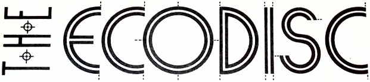
17Q
2023-08-26 Oekaki
In an attempt to catch up with all of the readings I have had queued in
preparation to Strange Loop, I've inadvertently filled
my every waking moments with enough dry PLT papers to make myself altogether
sick with the topic. I've been so caught up trying to learn about
expressiveness, that I momentarily forgot what about it was that I even wanted
to express. So, while I recover, I've picked up daily drawing again.
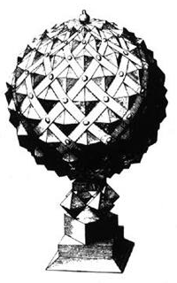
17P
2023-08-06 Lambdas
The first pass of review for Wiktopher is
done! Rek and I have been working toward this milestone for months.
While implementing changes to Oquonie, I noticed
how many single-purpose labels were used merely to hop over short lengths of
code, enough that having ran of ideas for names to called them, I would default
to things such as &skip, &continue or even
&ok. The solution was to create anonymous labels, and as to be
capable of nesting them, I ended up inadvertently adding lambdas to Uxntal which has drastically improve
code readability, and as a side effect allowed for the rapid creation of tree
data-structures.
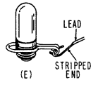
17O
2023-07-28 Maintenance All The Things
We are anchored in Von Donop, and I'm taking some time away from working on
the talk to finish proof-reading Wiktopher.
Week after week, I find myself revisiting Drifblim's implementation, and each time I leave
convinced that I've succeeded in improving it as much as I ever could,
considering the negligible scale of the program, yet more elegant solutions,
entirely unimaginable at the time, always become nothing less than obvious, a
week later. — The destination that I'm grasping for is getting ever
farther at the same rate that I approach it, but for as long as the program
decreases in size, and increases in reliability, the chase remains
exhilarating.
17N
2023-07-12 Uxntal Presentation
I've done little else this week other than proof-reading Rek's Wiktopher manuscript, but I did have this idea, while
working on program verification, that I might like to realize in the fall. A
system like Smalltalk's definition of interfaces
for message passing, in which a message must find a match in the listening
object's methods dictionary, might help improve Uxntal's expressiveness and be
realized entirely with syntax already understood by the assembler.
We had to negotiate rapids and convert the ideal transit time from tide
tables to Daylight Saving Time, which reminded me that I never made time to
know when the change occurred in Canada. I am taking a not of it here for next
autumn, it begins on the second Sunday of March at 2 a.m. and ends on the first
Sunday in November at 2 a.m.
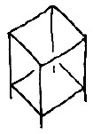
17M
2023-06-18 Princess Louisa
Ever since we sailed back to Canada, from Japan, friends have told us to make
the trip through Jervis Inlet to Princess
Louisa Inlet. After making our way there this week, and hiking up and down
its cliffsides, I can confirm that it does indeed live up to its fame, it is
absolutely breathtaking.
Having no connectivity has helped me focus on writing my talk for Strange Loop 2023.
17L
2023-06-16 Context Inference
We're on our way north, anchored in Telegraph harbor. We've preserved enough
food to get us through the summer, and stocked the shelves with books to last us as long. I was especially happy about
finding a copy of Carroll's Sylvie & Bruno, and Golding's Lord Of The
Flies, to carry along with us.
To continue my research on concatenative language inference, in contrast to
the reassembler
which creates an intelligible textual representation from a binary file and a
symbols file; this time, I've written a reformatter that
works from a textual source file and reindents it based on context. An
interesting puzzle, considering how few syntaxic structures Uxntal has, lacking
explicit notation for loops or even conditionals.
- Found a way to removed the page limit of 32kb for the wiki.
- By popular demand, the docs folder is now browsable.
- Enjoyed playing with Bellinitte's Pinhole renderer.

17K
2023-05-28 Road to Strange Loop
I've submitted a talk about permacomputing
to Strange Loop
2023 and it has been accepted. This summer, as we sail north, I'll be collating
my notes on the overlaps between permaculture and situated software design
practices — And, hopefully, have a substantial presentation by
September.
It's unbelieveable that we can sail up along the coast, find a pretty nook
between two mountains that seems inviting, and just live there. When we'll have
walked up and down the old trails to our heart's content, maybe we'll keep
going. Part of me wonder for how long this will remain possible, it's just too
good to last.
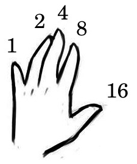
17J
2023-05-12 Type Inference
For a few weeks now, I've been sketching the basis for a type inference system for Uxntal. I first came
across a stack-effect validator when writing Factor, and I've been meaning to make my own since after
reading Rob Kleffner's talk notes. Prior to this project, I had a sense of what
the different constructions were, but writing a type-checker drew clearer lines between all these
different patterns.
We're casting off for Desolation Sound in a few days. Most afternoons are spent
stocking up Pino with enough food to last us until we
make our way back south next autumn. I'm eager to depart.
17I
2023-05-01 Concurrency All The Things
I recently watched David Ungar's Everything You Know About Parallel
Programming Is Wrong talk, which lead me to read Tony Hoare's
Communicating Sequential Processes, after which I felt inspired to
consider parallel computing once more,
and soon found myself taking a detour to play with the OCCAM programming language, and revisit threads in Uxn.
As a side-project, unrelated to threads, I made a pixel-perfect
implementation of the classic Macintosh Note Pad application, so I could keep
notes throughout the day and that turned out to be a fantastic aid to
collecting passing thoughts. While building it, I also had a chance to
implement text-wrapping in a project with very few moving parts and better
understood how to handle text selection, where the boundary of a selection ends
up being before the original anchor, and implemented it in Left.
17H
2023-04-22 Structured Editing
These past few months, I've explored playful
things to do with programming that might not directly serve a purpose, or
at least, one wouldn't come across them without seeking them out specifically,
and I've collected some of those seemingly useless, ideas into a talk and
submitted it to the Strange Loop conference happening in September.
Also, while I consider Beetbug to be a kind of
disassembler, I wanted to see if I could build something that would let
me go from a source file to an assembled rom, and back again. I figured that
being able to recover a project from a rom and its symbols file has important
potential in terms of data preservation. To make this possible, I modified the
symbols file to include comments, and was able to
complete the back and forth I wanted.
This allowed me to experiment with something called structured editing, in which you modifying the underlying
structure, symbols and bytecode of a program, and not its structural
representation.
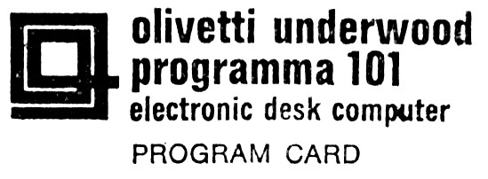
17G
2023-04-05 Interaction Nets & Oquonie
The past two weeks have flown by, between finishing Oquonie and preparing Pino for
the summer, each day I fall into bed completely exhausted. But the game is
nearly finished now, there are fewer and fewer bugs, and most of my time is
spent doing optimization.
I've been diving into Interaction Nets
again, and fallen for Sato's Inpla language, the
code is a nightmare but I feel that with a bit of work, and a better division
between the interpreter and virtual machine, this could turn out to be
something very fun.
After watching Alan Kay's OOPSLA
1997 talk, I went and read Smalltalk-80: Bits of
History, Words of Advice and I've been fascinated with it. It goes in
details about their approach to the implementations of the Smalltalk VM, and the challenges to getting the ST-80
image to boot on all these different platforms.
17F
2023-03-13 Residency at Biosonic
Spent the week at the LEÑA residency collaborating with audio-visual artists.
They call it a retreat, but really, I returned from Galiano more
exhausted than when I left. It was well worth it tho, as I rarely allow myself
to play music for more than an hour or two at a time.
I've had a bit of time to kill between rehearsals, and whenever I had a few
minutes to myself, I'd pour over the Lisp Machine memos. It occurred to me that the
byol-type books really ought to teach about targetting Lisp
architectures(or at the very least, something in the vein of SECD abstract machines), instead of implementing Lisp on top of imperative languages, which does a
disservice to the entire exercise.
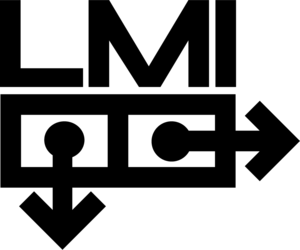
17E
2023-03-03 Preparing for Biosonic
I've been progressing on Oquonie, implementing
sounds and making sure that it runs as smoothly as possible on as many
different platforms as I can. This meant revisiting a lot of the implementation
details. The month has flown by, but it has been a lot of fun learning about
optimization.
I will be staying on Galiano for a week during the Biosonic residency, it has
been a while since I've last slept on firm ground.

17D
2023-02-24 Oquonie is nearly ready
The weather has been absolute garbage and so has been a great help in
advancing the Oquonie port. Not only is the project
pushing Uxn further than it previously ventured, but it
is equally pushing the tools used in its creation. The building of the game has
had me do some significant improvements to Drifblim, Uxnlin, and Left.
17C
2023-02-07 Oquonie is happening!
After putting together a demo of what a Varvara
implementation of Oquonie could look like, Rekka and
I decided to officially port it. It's a lot of fun to revisit this strange
universe. I hope that we can bring the essence of the original into the redux
version.
- Spared some time to fix a handful of issues in Orca.
- Spent nearly every waking moment working on the Oquonie prototype.
17B
2023-01-20 Function Stacks
I've been reading about reversible
computing and put together a playground that allows me to experiment with the ideas of
psi-lisp. This whole business of time
reversible logic feels like visiting an old
friend.
Meanwhile, I've also tried to bring potato to a
usable state, which means that for it to entirely replace the current launcher,
it should be able to assemble and run the assembled rom, a state to which I am
inching closer.

17A
2023-01-08 Pino Rewiring
Since the new year began, we have spent every waking hour rewiring
Pino, it has been a more challenging project than we had hoped but we will
sleep soundly knowing that each connection has been well made.
I've read Koopman's Stack
Machines: The New Wave and it inspired me to experiment with other virtual
machine designs, namely that of the NOVIX NC4016. But after two weeks of
experiments, I returned to writing Uxntal, partly because I do not feel limited
in the realization of my ideas with my current stack, and partly because these
sort of systems make for extremely obfuscated assembly languages. That being
said, I can't seem to shake the craving to experiment with the Setun-70..
2022
We sailed to Desolation Sound in late spring spring, spent the summer up
there, and didn't return until the fall. We left with stores bursting with preserved foods, allowing us to stay away for months
without the need to resupply.
The year was beginning and I hadn't entirely made up my mind about Uxn, I had doubts that it might be the thing that I would
want to keep on using, as it often goes with such projects, but the year came
and went without ever finding myself wanting to program in any other
language.

For the year of 2022, Richard Adams' Watership Down, was my favourite book. Only Yesterday was my favourite movie. SadSvit's Cassette was my favourite album.
16Z
2022-12-25 Reversible Computing
This week, I was introduced to reversible
computing and linear logic, which not only do not generate garbage, but
also preserves state by making any loss of entropy explicit and an integral
part of the program's architecture. To say that this new knowledge shook my
understanding of programming would be an understatement.
I don't know what 2023 has in store, but some of it will be invariably spent
tangled up in this.
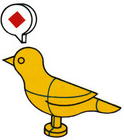
16Y
2022-12-12 Beetbug
Continuing my recent experiments with the self-hosted
emulator, I decided to repurpose it and turn it into an entirely
virtualized step-debugger. It is called Beetbug,
after Uxn32's
debugger. To improve error reporting across the ecosystem, I've also written a
symbols file specification that will allow the
various emulators and debuggers to add labels to addresses when throwing errors
and warnings.
As I was learning to use the Soroban to do elementary level multiplications, I
stumbled on this fantastic article on the use of the Salamis Tablet, which
has been fascinating me and occupying my mind at night. There, now it can
torment you too.
16X
2022-11-27 Soroban
I had this idea of implementing the Uxn virtual machine in itself, to
virtualize the memory and runtime entirely in a sandboxed
emulator rom. That would allow something like a debugger to be built that
doesn't preclude any special Varvara support.
I also tried writing a block editor for Uxntal, but failed, I couldn't make up my
mind on how to visualize each cell, and in the end, I've decided to drop the
idea and went back to reading Takashi Kojima's Advanced Abacus book and
toying with my virtual soroban while the snow fell on the boat.
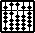
16W
2022-11-18 Handmade Seattle 2022
I had a unforgettable time at Handmade Seattle 2022. I met countless wonderful creatives,
including someone who introduced me to Interaction Nets, another who showed me their
little programming
language targeting Uxn, someone even noticed the Ithkuil easter
egg on one of my slides and came to talk to me about it. I also got to spend
hours exchanging ideas with Peter van Hardenberg and Rasmus Andersson, whose work inspire me.
The conference coincided with the first Pacific Northwest Merveilles meetup. There was no better way to end
this trip than having the chance of finally meeting, in person, some of the
friends with whom I share this online community.
16V
2022-10-31 Last Daily
Today was the last day of October, and the last daily drawing. I had a good time beginning each morning that way, but it's time to wrap up the slides for Handmade Seattle.
I haven't had time to do much else this month, but I did modify Left to use a variant of the Smalltalk-76 font, which after a handful of tweaks, has quickly turned into my favourite font to program with.

16U
2022-10-08 TinyBASIC
I've recently finished reading What The Doormouse Said, and I was fascinated by the story of the People's Computer Company publishing the specification for a subset of the BASIC programming language, inviting programmers to write their own unique implementations for their machines.
This motivated me to take a deep dive in the language, and what better way to grasp a language than to write an implementation.
16T
2022-10-02 A month of conworld
We have returned to Victoria for the winter and reconnected with our little local sailing community, it has been wonderful hearing about everyone's summer adventures. We have a lot of challenging projects to do over the next few months and knowing that we have dependable friends nearby is reassuring.
I am dedicating each morning to drawing a different scene from the Neauismetica, and will try to keep it up for as long as I have ideas.
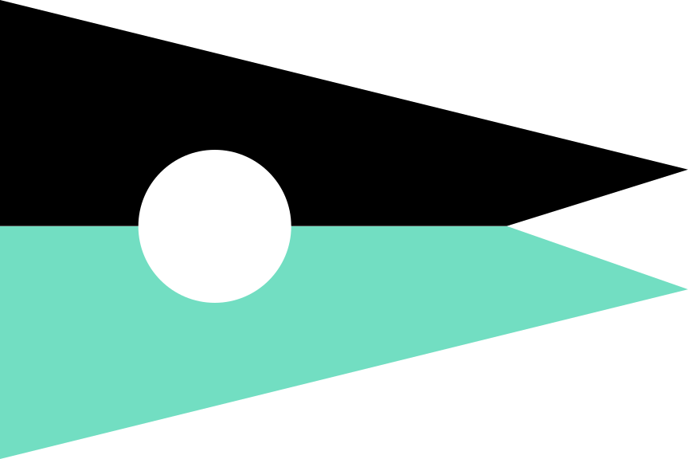
16S
2022-09-12 We've got worlds to go to
Once again, finding ourselves having drinks over a scattering of world atlases and passage planning compendiums.
The days are getting shorter, and so is the time that we can spend on the computer, due to our batteries depleting earlier a bit each day. So, I spend my evenings proof-reading the Wiktopher manuscript and reading.
16R
2022-08-30 Hunger for a Way Out
The misantropia that accompanied our return to the noise and smell of the cities, has not yet subsided. We find ourselves surrounded by people, homologous to those who happily mow the lawn at dinner time, who will break the quietude of an anchorage by running a gas generator to watch television as the sun sets.
It's no wonder that birds don't sing here, lest their songs be invariably drowned by the deafening display of the vacationers broadcasting to the fourth horizon over that they are taking it easy.
- Made Drifblim capable of assembling large files, namely Potato.
- Started poking at building a little sequencer again, oh no.
16Q
2022-08-16 Farewell Desolation
We've left Desolation Sound, and stopped in Texada to reprovision before sailing south. We finally have access to reliable internet access again, but none of my near-endless supply of things to catch up on, none of it stirs any interest in me right now.
Despite my unsettled moods, I was able to built myself a cozy little world to work from, the operating system turned out to be extremly useful in looking through my large collection of pcm, chr and icn files.
16P
2022-08-01 A Potato
We've sailed ourselves into somewhat of an internet deadzone, where my evenings consist of lying in the hammock hung between the jib and the mast, thinking about what sort of an operating system I'd like for myself; what would be both realistic for the Uxn platform, and the limits of my own aptitude for realizing it.

16O
2022-07-16 Slideshow Tech 2000
I haven't had it in me to start new projects these past two weeks, so I've instead revisited projects in need of care; namely Adelie which was until now undocumented, leaving people to guess at how things worked. It has been nice to see some terrific projects made with it, like tower of hanoi, and these gorgeous slides. It took all the restrain in the world not to turn it into another Hypercard.
16N
2022-07-02 Self Documenting Binaries
The more I try to imagine what resilient software might look like, the more shortcomings I find in Varvara roms, namely, the ones that rely entirely on external documentation. So, I decided to try and begin to tackle this problem by adding a menu navigation manifest to each one, which not only makes the application self-documenting, but also improves accessibility.
- Planted soy at 50°8.549'N 124°56.972'W
- Wrote a macros pre-processor for Drifblim.
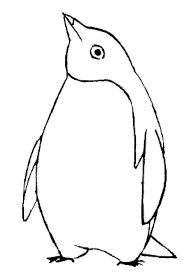
16M
2022-06-19 Dwindling Stores
I hate to think that we will, at some point, have to sail south to re-supply, we've both decided that we shall stretch our supplies for as long as we possibly can. We will soon run out of fresh produce, but we have prepared enough preserves to last us for months.
- Wrote our keynote for NIME 2022.
- Transcribed notes over to the Permacomputing Wiki.
- Planted wheat, barley and mustard greens at 50°8.409'N 124°56.842'W
16L
2022-06-03 Uxntal Communication II
We've arrived in Desolation Sound and met up with friends. We spend the long afternoons rowing the dinghy along the shoreline and exploring the thickly forested coast. I went ahead and assigned a glyph to each Uxn opcode, to make an Uxntal Alphabet, it adds a wonderful conlang aspect to the project. I'm hoping to turn this into a little graphical assembler at some point.
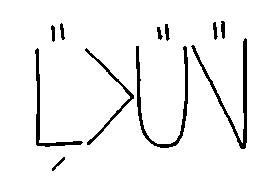
16K
2022-06-01 Uxntal Communication I
I couldn't stop thinking about the idea of a Uxntal Sign Language. So, with Rekka's help, I began assigning hand gestures to numbers, operators and modes. I'm also thinking that I might like to assign glyphs so an assembler that does away with English altogether could be envisioned.
- Wrote a linter for Uxntal, and implemented tail-call optimization to uxnasm.
- Planted lentils, mung beans and radishes at 50°8.527'N 124°40.195'W

16J
2022-05-30 Heading North
We are finally making our way north toward Desolation Sound and the Broughton Archipelago. We are spending these late spring days anchored between high mountains, revisiting ideas for projects we conceived of this last winter, but decided to leave for a later time. I've been fascinated by how an entire computing paradigm can emerge from the primitives of combinatory logics, my recent thoughts have been populated by these strange talking birds.
16I
2022-05-14 Slides rules
Aquired a couple of slide rules from a retired teacher, and figured out how to use them. My plan is to gift them to people we meet in our travels. I've spent the better part of the week plotting shapes on paper with the help of the slide rule, while also experimenting with a line-plotting engine, inspired from Turtle Graphics, for creating procedural graphics.
16H
2022-04-30 Uxn Specs
I felt frustrated by the development of Uxn this week. It reminded me of the difficult period in Orca's development when it was beginning to be actively used, meanwhile the last few operators were being finalized. Folks would raise hell each time operators were moved around and it made finalizing the spec extremely painful.
16G
2022-04-14 Bedrock Failure
Inspired from the Cuneiform Tablets paper, I considered realizing the paper's point of implementing Smalltalk72 on a UVM, I spent a few days experimenting with the ST72 environment — Only to realize that, like the ChifirVM, it is poorly thought out and fundamentally irreconcilable with my vision of small computing.
16F
2022-03-30 FSF
We gave our talk at LibrePlanet 2022, and it went very well. During the Q&A, we talked about living without a fridge, from food preservation to sprouting, and we were delighted to see so many people interested in that stuff. I guess the intersection of computers and gardens is slightly larger than I thought.
- Played a little set for Algorave's 10th anniversary.
- Revamped Orca, Nasu, and Left to support Varvara's new Screen/Auto port.
16E
2022-03-14 Digital Preservation
Took a deep dive into the various experiments in digital preservation(PADI, CAMiLEON, Domesday, etc..), didn't really find anything worthy of note, but it did inspire me to rewrite some of the content on permacomputing. I've also spent the past couple of days improving Noodle, and adding support for tga images.
- Wrote a little single-file Uxntal assembler called Drifblim.
16D
2022-02-30 A Dice Game
Rekka is putting the finishing touches to Wiktopher, and asked me to design a game that the people of Iridi could be playing. I thought a dice game combining the capture mechanism of Go and the randomness of the Domino draw might be a good fit, learn to play Hako.
16C
2022-02-14
Our upcoming keynote for Libre Planet 2022 has been announced, we've built a little slideshow program for the presentation. I've revamped the Orca documentation and added a reference page, as well as fixing a few bugs in the Uxntal implementation. Toying with wireworld sucked much of my time, again.
Finally, brought back incoming links at the bottom of wiki pages. They had been gone since the migration from C, to Uxntal.
16B
2022-01-30 Tamagochi
Rekka and I completed Yufo, our entry for the Virtual Pet Jam 2022, we also added a Serbian and Polish translation to Thousand Rooms. When I wasn't playing with primes, or reading, I was noodling in wireworld. Ah! Also, Uxn turned one year old.
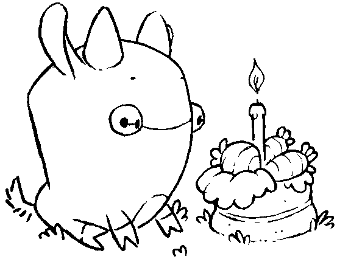
16A
2022-01-14 Devlog Start
To kick off 2022, I've decided to write 3 documents for the Uxn project, in
which I'll save my design notes, the first one is
about the virtual machine itself, the second
one is about a personal computer and the last one might be about the
language design. Hopefully, by the end of this year, this project will have
have matured into something that is more easily definable.

2021
The pandemic restrictions forced us to stay at one place, if only for a moment. To stop running and possibly build something, to spend more time with the same people and to become familiar with our surroundings. Every year is meant to be my depth year, every January, I tell myself that this time, finally, I will look deeper into things. I typically don't follow through, and this year might not have been as deep a year as I had hoped, but I can say that my understanding of a few specific things have deepened.
By the year's end, I, along with a handful of amazing people, had brought a little programming language into the world, it cannot do much at all, but building this project brought me closer to understanding the deeper questions I had about programming, especially how human-language maps to symbols that computers can understand.
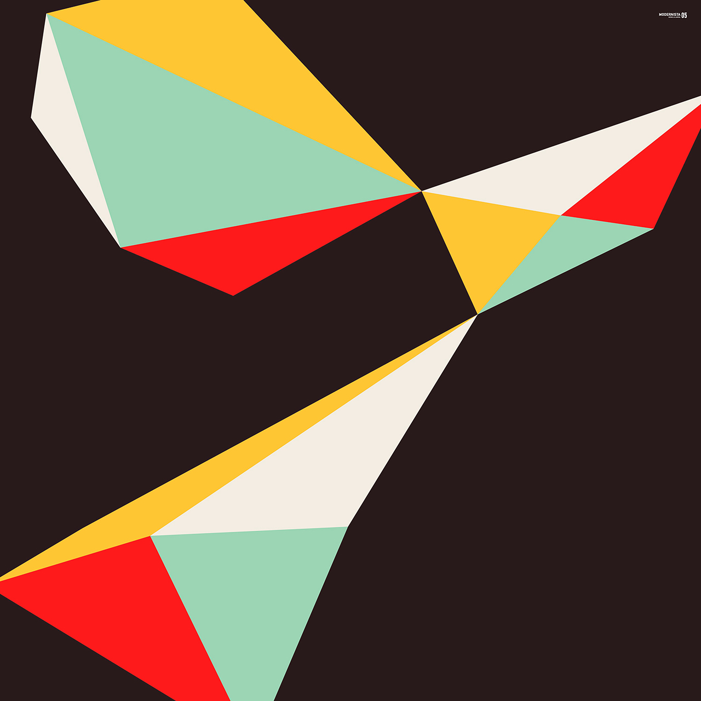
Between the air that's hard to breath due to forest fires, and the water rationing that stops us from filling up our tanks, the tumbling down of everything has, to my surprise, not paralyzed me as much as I expected. It has been a constant creative force that pushed me through the year to learn about food preservation, water purification, insulation, heating, and various endeavors that I had previously overlooked, and that might come in handy would things keep on deteriorating.
Among the more trivial things that brought me joy this year, I've successfully grown a large lion's mane mushroom aboard the boat, worked on a wonderful tribute of the catclock with Rekka, did plenty of origami with our friend's kids and played accordion for the first time.
For the year of 2021, Edward Abbey's The Monkey Wrench Gang, was my favourite book. The Lobster was my favourite movie. Tamaryn's Dreaming The Dark was my favourite album.
15Z
2021-12-30
Revisited the tga format as a potential transfer format for Varvara applications such as Noodle. I've also been flicking through the massive collection of notes I've accumulated on the topic of paper computing and reflecting on this year that is now ending.
- Wrote a CHIP-8 emulator for Varvara.
15Y
2021-12-14
Spent the first few days of December solving the Advent Of Code puzzles in Uxntal, got distracted, and started thinking about image support inside Left. I've also spent time experimenting with the Subleq virtual machine.
15X
2021-11-30
Was away from Pino to visit family, spent our evenings catching up and watching movies. Received a replacement keyboard for Ayatori, it's good to be working on the Thinkpad again.
15W
2021-11-14
Wrote a little brainfuck interpreter in Uxntal during this week's transits. My thoughts have been drifting back to primes and fractions, I've been considering a twist to fractran where fractions with a zero as nominator or denominator might be used as jump operations, but I have yet to implement this.
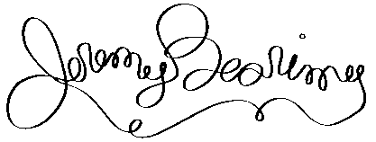
15V
2021-10-30
Decided to stop doing daily drawings and port Donsol instead. I had it all planned out in my head before starting, I went ahead and completed the port within just a few days. The work was done on a Pinebook Pro, revealing a few issues with Left, so I spent some time optimizing the text-editor so it would run faster.
15U
2021-10-14
Spending the month of October between daily drawings, and various food preservation projects. As I work on a picture, I'll occasionally stop to improve Noodle in some way or correct a bit of friction. The near totality of my computer activities(drawing, composing and programming) are now done from within the Uxn virtual machine. I couldn't be happier.
- Added guides for the line and rect tool, in Noodle.
- Added interface responsiveness, in Dexe.
15T
2021-09-30
Rewrote Dexe to be compatible to the latest changes to Varvara. I'm unsure what to do about Oscean's twtxt and RSS feeds, generating them in Uxntal will be hard, especially the date conversion. Maybe I could build the now page's body from the twtxt feed, but if I did, I would loose the Arvelie timestamps and links. Picked up Moogle again, cleaned up the codebase.
15S
2021-09-14
The grey weather gives us only a few hours of solar power each day, so we alternate between cleaning and doing other things, such as origami. I've been optimizing Orca, trying to make it run faster, inspired by the recent optimizations of Noodle.
- Added d-pad controls, in Orca.
15R
2021-08-30
Currently rewriting Oscean in Uxntal, as an experiment to see how far I can push Uxn, and explore what a wiki from first principles might even look like. A few features have yet to be ported, but the main components are done. We're slowly sailing North toward Vancouver to see friends, we left Saturna for Ladysmith and Silva Bay, Pino has engine problems, again.
15Q
2021-08-14
We're anchored near Saturna, it has been nice to
work offgrid again. I've started porting paradise in Uxntal, it would be nice to port Oscean at some point too.
After 16 years of daily journaling and tracking, I am finally stopping. I
believe that the problems I was attempting to tackle, such as moodswings and
the lack of focus, have been fixed and the data gathered in these recent years
reveals nothing new or actionable. A bi-monthly format where I write a few
sentences on my recent interests might be more practical.
Let's begin, once again.
incoming home blog